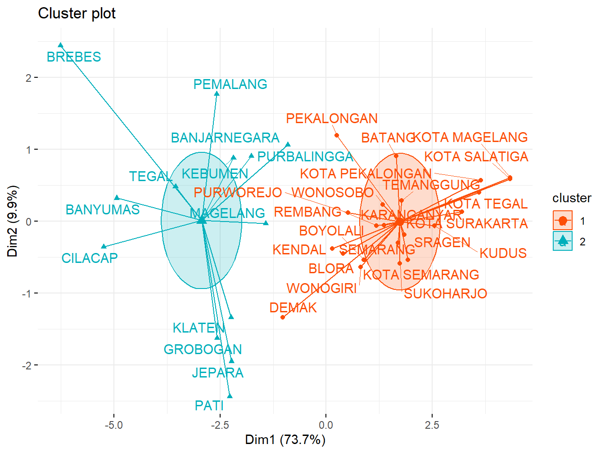
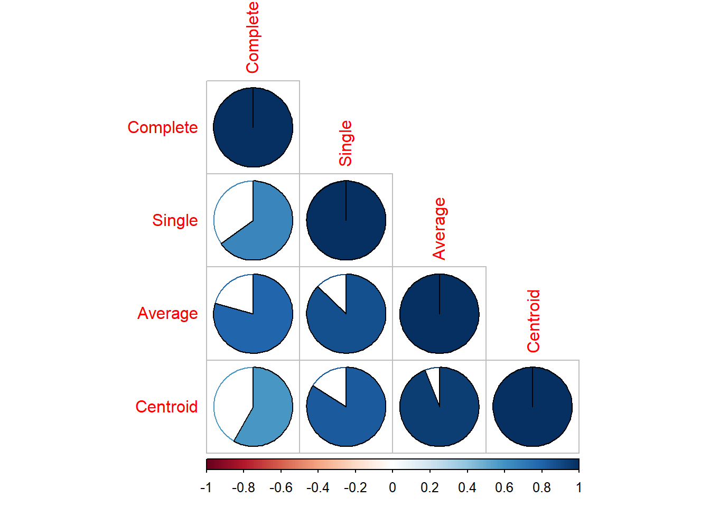
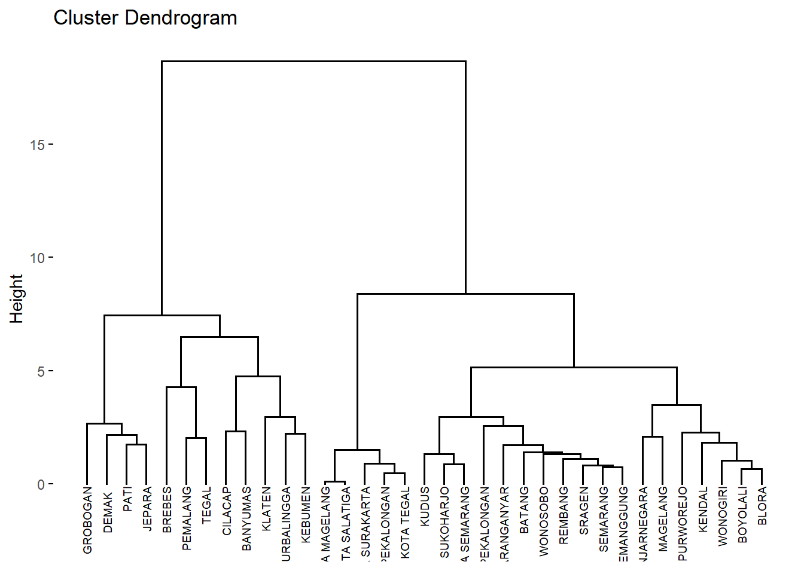
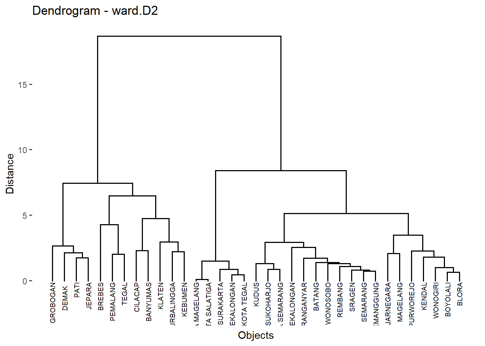
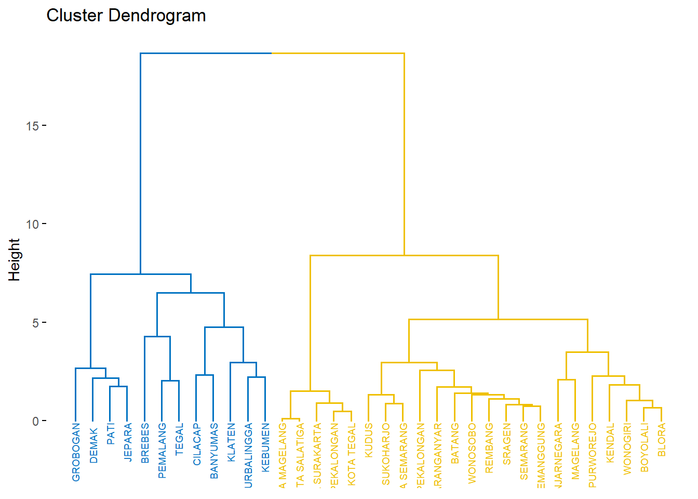
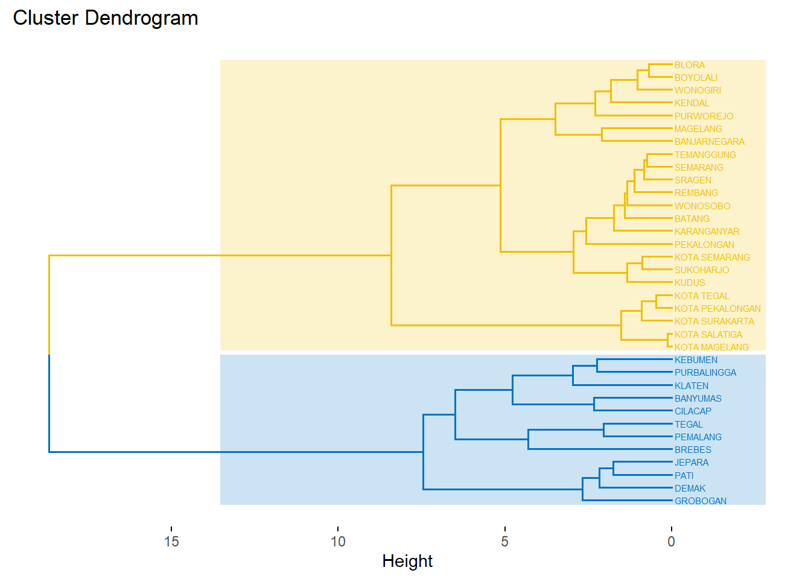
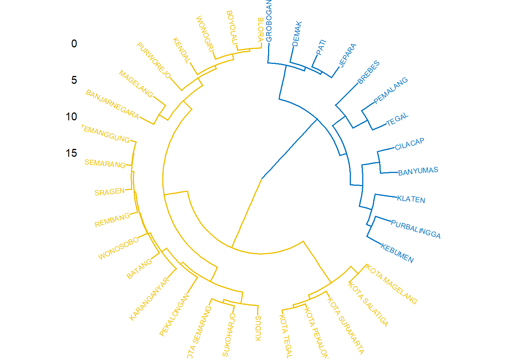
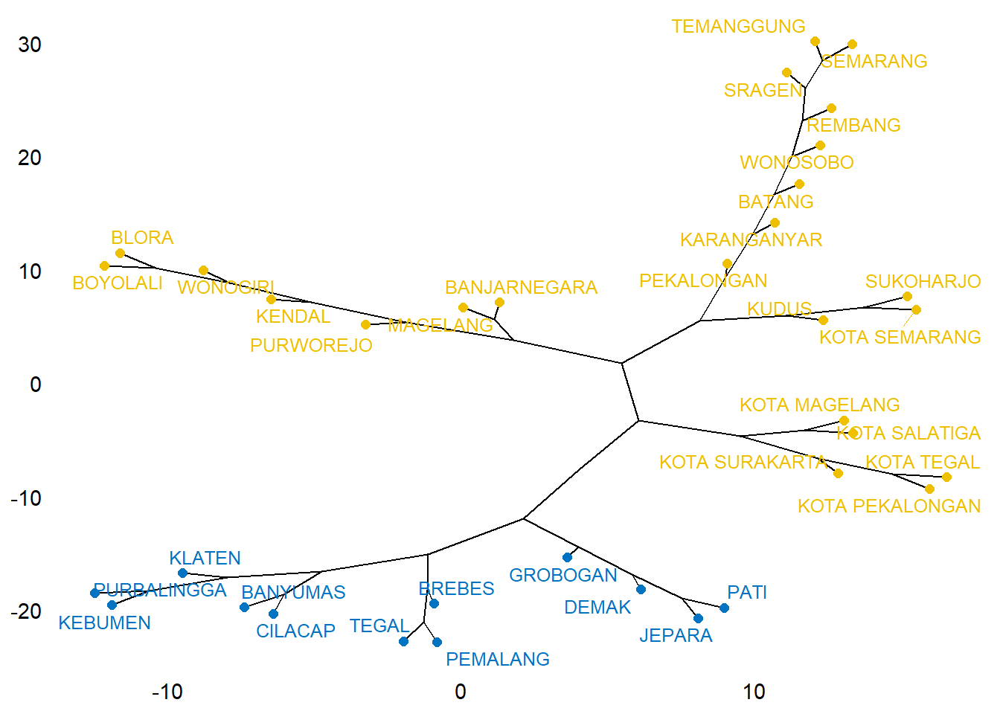
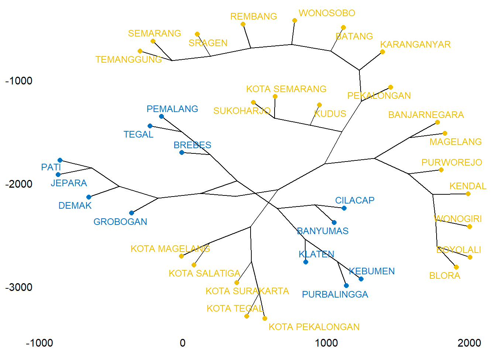

Buku ini sedang dalam tahap tinjauan terbuka. Kami ingin umpan balik Anda untuk membuat buku ini lebih baik bagi. Anda dapat memberikan anotasi pada beberapa teks dengan memilihnya menggunakan kursor dan kemudian klik “Beri Anotasi” pada menu pop-up. Anda juga dapat melihat anotasi orang lain: klik tanda panah di sudut kanan atas halaman
4.1 Comparing dendrograms
##
## ---------------------
## Welcome to dendextend version 1.18.1
## Type citation('dendextend') for how to cite the package.
##
## Type browseVignettes(package = 'dendextend') for the package vignette.
## The github page is: https://github.com/talgalili/dendextend/
##
## Suggestions and bug-reports can be submitted at: https://github.com/talgalili/dendextend/issues
## You may ask questions at stackoverflow, use the r and dendextend tags:
## https://stackoverflow.com/questions/tagged/dendextend
##
## To suppress this message use: suppressPackageStartupMessages(library(dendextend))
## ---------------------##
## Attaching package: 'dendextend'## The following object is masked from 'package:stats':
##
## cutree# Compute distance matrix
res.dist <- dist(df, method = "euclidean")
# Compute 2 hierarchical clusterings
hc1 <- hclust(res.dist, method = "average")
hc2 <- hclust(res.dist, method = "ward.D2")
# Create two dendrograms
dend1 <- as.dendrogram (hc1)
dend2 <- as.dendrogram (hc2)
# Create a list to hold dendrograms
dend_list <- dendlist(dend1, dend2)
tanglegram(dend1, dend2,
highlight_distinct_edges = FALSE, # Turn-off dashed lines
common_subtrees_color_lines = FALSE, # Turn-off line colors
common_subtrees_color_branches = TRUE, # Color common branches
main = paste("entanglement =", round(entanglement(dend_list), 2))
)
# Create multiple dendrograms by chaining
dend1 <- df %>% dist %>% hclust("complete") %>%as.dendrogram
dend2 <- df %>% dist %>% hclust("single") %>%as.dendrogram
dend3 <- df %>% dist %>% hclust("average") %>%as.dendrogram
dend4 <- df %>% dist %>% hclust("centroid") %>%as.dendrogram
# Compute correlation matrix
dend_list <- dendlist("Complete" = dend1, "Single" = dend2,
"Average" = dend3, "Centroid" = dend4)
cors <- cor.dendlist(dend_list)
# Print correlation matrix
round(cors, 2)## Complete Single Average Centroid
## Complete 1.00 0.65 0.79 0.58
## Single 0.65 1.00 0.87 0.84
## Average 0.79 0.87 1.00 0.94
## Centroid 0.58 0.84 0.94 1.00## Warning: package 'corrplot' was built under R version 4.4.1## corrplot 0.95 loaded
# Compute distances and hierarchical clustering
dd <- dist(scale(data), method = "euclidean")
hc <- hclust(dd, method = "ward.D2")
fviz_dend(hc, cex = 0.5,
main = "Dendrogram - ward.D2",
xlab = "Objects", ylab = "Distance", sub = "")

fviz_dend(hc, k =2,
# Cut in four groups
cex = 0.5,
# label size
k_colors = c("#E7B800", "#FC4E07"),
color_labels_by_k = TRUE, # color labels by groups
ggtheme = theme_gray()
# Change theme
)

fviz_dend(hc, k =2, cex = 0.4, horiz = TRUE, k_colors = "jco",
rect = TRUE, rect_border = "jco", rect_fill = TRUE)

## Loading required package: igraph## Warning: package 'igraph' was built under R version 4.4.1##
## Attaching package: 'igraph'## The following objects are masked from 'package:stats':
##
## decompose, spectrum## The following object is masked from 'package:base':
##
## union
require("igraph")
fviz_dend(hc, k =2, # Cut in four groups
k_colors = "jco",
type = "phylogenic", repel = TRUE,
phylo_layout = "layout.gem")